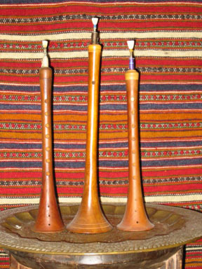
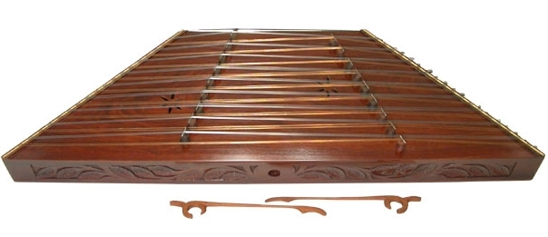
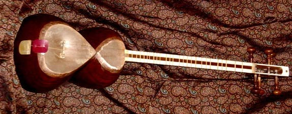
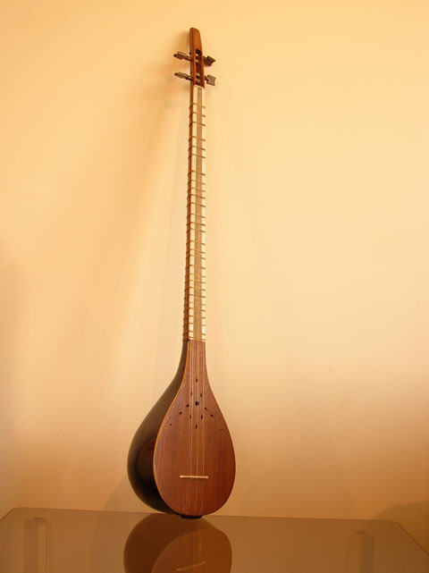
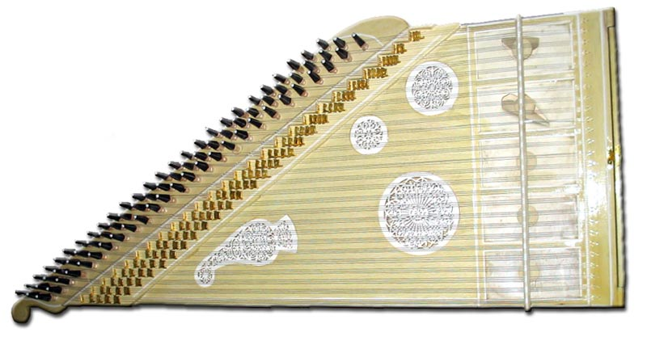
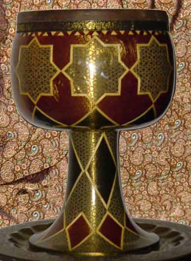
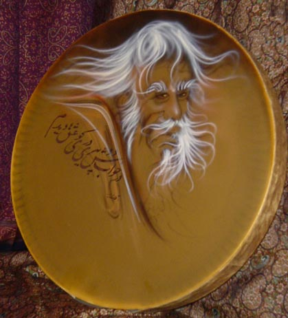
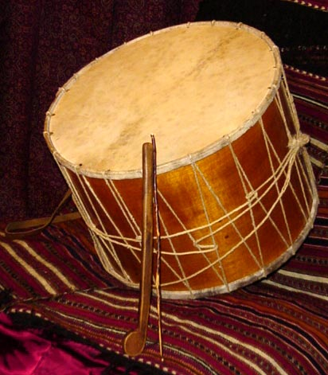

Nay gets its name from the reed from which it is made.
It measures roughly thirty to seventy centimetres and has metal rings at both ends.
Listen to a sample:
Wind Instruments | Sorna

Literally means a ‘strong flute’.
The Sorna has a double reed construction, similar to an oboe and is common all over contemporary Iran.
Sorna is almost always accompanied by Dohol.
Listen to a sample:
String Instruments | Barbat
The Barbat is an ancient lute with a large pear-shaped body.
In Persian, the word ‘bat’ means duck, while ‘bar’ is the duck’s breast.
It is said that the profile of a Barbat resembles that of a duck.
Listen to a sample:
String Instruments | Santur

The Santur is a three octave wooden-hammered dulcimer instrument.
It is a trapezoid-shaped case, approximately 90 centimetres wide at one end and 35 centimetres wide at the other.
It has 18 quadruple sets of strings (i.e., 72 in all), 9 (bronze) in the low register, and 9 (steel) in the middle register.
They are struck with light wooden hammers (mizrabs), held by three fingers of each hand.
Listen to a sample:
String Instruments | Kamancha
The Kamancha gets its name from kaman, which means ‘an arch’, and the diminutive ‘cha’.
It consists of a small, hollowed hardwood body with a thin stretched fish-skin membrane.
Its neck is cylindrical and has four strings. It is said that the fourth string was added after the introduction of western violin to Iran.
Listen to a sample:
String Instruments | Tar

Tar means ‘a string’. The Tar is the most prevalent plucked instrument in Iran today.
It is a fretted lute with six strings with a long neck and a double bellied sound box, over which is stretched a thin sheep skin membrane.
Listen to a sample:
String Instruments | Dutar
Dutar, which means ‘two strings’ in Persian, is of the family of tar.
The pear-shaped body is carved out of a single block of mulberry wood, while apricot or walnut wood is used to make its neck.
It has two steel strings, which in the past were made of silk or animal skin.
Listen to a sample:
String Instruments | Sitar

The Sitar (Persian ‘three strings’) is a small lute with a long neck.
It was originally equipped with three metallic strings but a fourth was added during the Qajar period.
Strings are plucked with the right index finger, sometimes with a metal nail-piece.
The sound box of the Sitar is a curved, pear-shaped hemisphere, like the lute, and is generally made of stripes of wood from berry.
The long and slender neck is attached to the sound box.
Listen to a sample:
String Instruments | Qanun

The Qanun is a flat trapezoidal wooden box, with twenty-four strings triple fastened at its rectangular side on one end and two pegs on the oblique side on the other.
The player makes slight changes in pitch by manipulating small levels lying below each course of strings.
The strings are plucked with two horn plectra, one on each index finger.
Listen to a sample:
Percussion Instruments | Tunbak

The Tunbak is made of walnut wood and consists of two parts:
1) The upper part is a cylinder covered by skin and
2) The lower part is the neck with a wide, open mouth.
Listen to a sample:
Percussion Instruments | Daf

Daf refers to several types of tambourine or frame drums of varying sizes.
The instrument consists of a skin membrane stretched over a wooden frame.
The frame is usually fitted with metal rings on the inner surface and in some cases with cymbals.
Listen to a 10-second Sample:
Percussion Instruments | Duhul

A Duhul has a hollow cylindrical body, around one metre in diameter and 25 to 30 centimetres in height.
Both ends of the cylinder are covered with a tightly stretched skin.
The Duhul is played with two sticks, one similar to a walking stick and the other a thin twig.
The Duhul is a rural instrument usually accompanied by the Sorna.
Listen to a sample:
Percussion Instruments | Dayira
Consists of a wooden circle, on one side of which there is a tightly stretched skin.

.jpg)
.jpg)